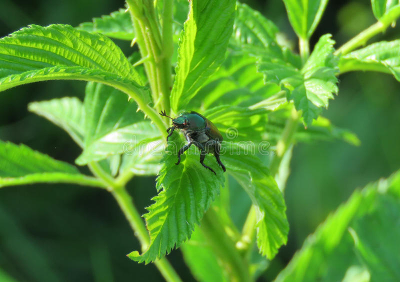

Lawn Pest Control Service
Mosquito and Tick Control
Mosquito control manages the population of mosquitoes to reduce their damage to human health, economies, and enjoyment. Mosquito control is a vital public-health practice throughout the world and especially in the tropics because mosquitoes spread many diseases, such as malaria and the Zika virus. Adult mosquito populations may be monitored by landing rate counts, mechanical traps or by, lidar technology[1][2] For landing rate counts, an inspector visits a set number of sites every day, counting the number of adult female mosquitoes that land on a part of the body, such as an arm or both legs, within a given time interval. Mechanical traps use a fan to blow adult mosquitoes into a collection bag that is taken back to the laboratory for analysis of catch.
- Nuisance mosquitoes bother people around homes or in parks and recreational areas
- Economically important mosquitoes reduce real estate values, adversely affect tourism and related business interests, or negatively impact livestock or poultry production
- Public health is the focus when mosquitoes are vectors, or transmitters, of infectious disease.
Public health is the focus when mosquitoes are vectors, or transmitters, of infectious disease.
Mosquito control manages the population of mosquitoes to reduce their damage to human health, economies, and enjoyment. Mosquito control is a vital public-health practice throughout the world and especially in the tropics because mosquitoes spread many diseases, such as malaria and the Zika virus.
Lawn Insect Control
We are giving 100% bug free lawn. Some insect repellents are insecticides (bug killers), but most simply discourage insects and send them flying or crawling away. Almost any might kill at a massive dose without reprieve, but classification as an insecticide implies death even at lower doses. Pesticides are applied to crops by agricultural aircraft, tractor-mounted crop sprayers, aerial spray by modern aircraft or as seed dressings to control pests. However, successful control by pesticides is not easy; the right formulation must be chosen, the timing is often critical, the method of application is important, adequate coverage and retention on the crop are necessary. The killing of natural enemies of the target pest should be minimized. This is particularly important in countries where there are natural reservoirs of pests and their enemies in the countryside surrounding plantation crops, and these co-exist in a delicate balance. Often in less-developed countries, the crops are well adapted to the local situation and no pesticides are needed. Where progressive farmers are using fertilizers to grow improved crop varieties, these are often more susceptible to pest damage, but the indiscriminate application of pesticides may be detrimental in the longer term.
- Where progressive farmers are using fertilizers to grow improved crop varieties, these are often more susceptible to pest damage.
- The indiscriminate application of pesticides may be detrimental in the longer term.
- Where progressive farmers are using fertilizers to grow improved crop varieties, these are often more susceptible to pest damage.
- The indiscriminate application of pesticides may be detrimental in the longer term.
Pesticides are applied to crops by agricultural aircraft, tractor-mounted crop sprayers, aerial spray by modern aircraft or as seed dressings to control pests.
The killing of natural enemies of the target pest should be minimized. This is particularly important in countries where there are natural reservoirs of pests and their enemies in the countryside surrounding plantation crops, and these co-exist in a delicate balance. Often in less-developed countries, the crops are well adapted to the local situation and no pesticides are needed. Where progressive farmers are using fertilizers to grow improved crop varieties, these are often more susceptible to pest damage, but the indiscriminate application of pesticides may be detrimental in the longer term.